1 / 14
Noto · Sicile · Italie
Une oasis privée parmi des oliviers centenaires — vue infinie sur la mer Ionienne, silence sicilien, et rien pour vous déranger.
La Philosophie
Villa Magnus a été conçue comme un antidote à l'ordinaire. Entourée de centaines d'oliviers centenaires sur le plateau calcaire entre Noto et la mer, c'est un endroit où le temps ralentit, la beauté est partout et le silence devient un luxe en soi.
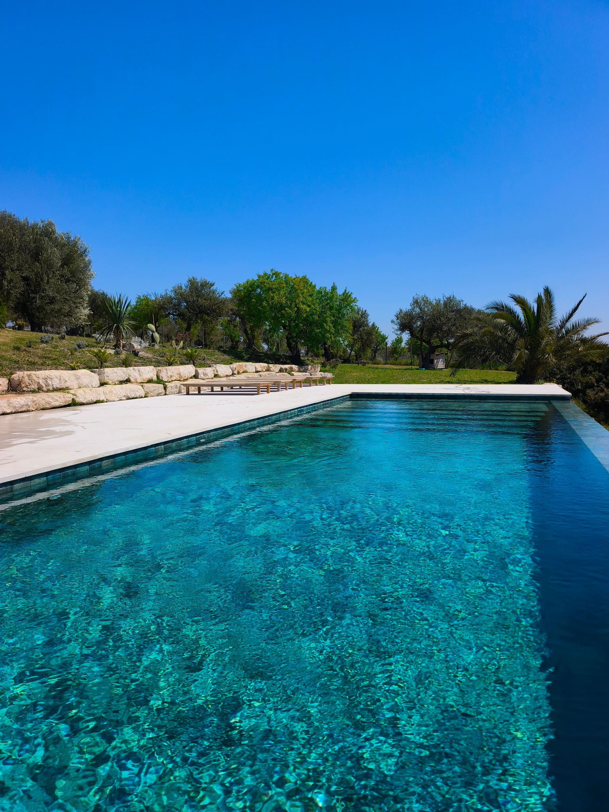
La Piscine
Le joyau de Villa Magnus est une piscine à débordement de 12 mètres, sans chlore, à l'eau salée, dont le bord se fond dans la mer Ionienne à l'horizon. Saline, chauffée par le soleil et d'un calme absolu — c'est le souvenir indélébile que chaque hôte emporte avec lui.
Transats, ombre et parfum d'oliviers. Rien de plus n'est nécessaire.
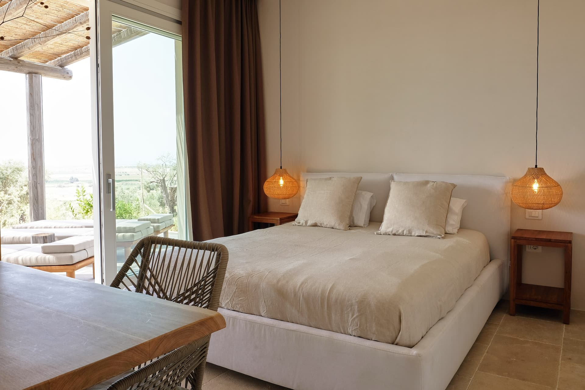
Les Intérieurs
Trois chambres spacieuses habillées de rotin naturel, de lin et de coton. Lumineuses, sereines, conçues pour ressembler à une maison réfléchie, non à une chambre d'hôtel.
Une cuisine entièrement équipée, un grand salon et une terrasse faite pour les soirées lentes et les dîners sans hâte.
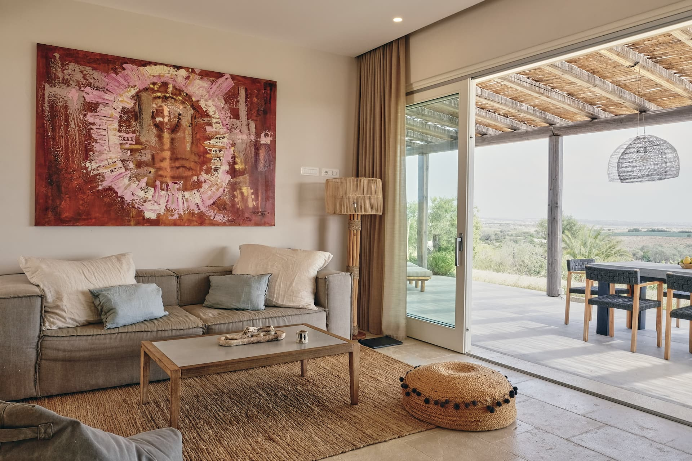
Le Territoire
La villa est implantée dans un vaste jardin privé de centaines d'oliviers centenaires — un paysage façonné au fil des siècles, entièrement privé, animé du chant des cigales au crépuscule. Le BBQ industriel attend ceux qui pensent que le dîner mérite de devenir un événement.
Voir la GalerieÉquipements
Eau salée, sans chlore, 4,5 × 12 m. Vue panoramique sur la mer Ionienne. Transats inclus.
Un vrai grill d'extérieur — pour ces soirées qui méritent de devenir quelque chose de plus.
Arbres centenaires, isolement complet. Pas de voisins. Pas de bruit. Seulement la nature.
Jusqu'à 6 personnes. Rotin naturel, lin et coton. Lumineuses et sereines.
Tout le nécessaire pour cuisiner avec des produits locaux. Lave-vaisselle et machine à laver.
Grande terrasse pour les repas en plein air. Vue panoramique. Magnifique au coucher du soleil.
Climatisation complète. Parfaitement fonctionnelle — comme il se doit en été en Sicile.
Connexion fibre dans chaque pièce et en extérieur. Idéal pour le télétravail.
Caméras de sécurité IA sur les extérieurs de la propriété. Tranquillité d'esprit jour et nuit.
Lit de voyage et chaise haute disponibles. Les familles avec jeunes enfants sont les bienvenues.
Galerie
Cliquez pour explorer
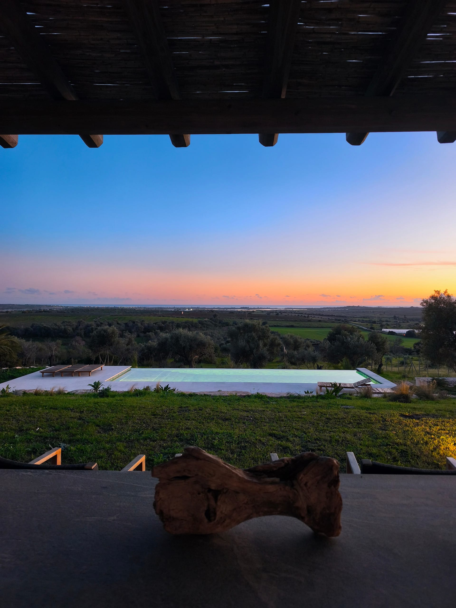
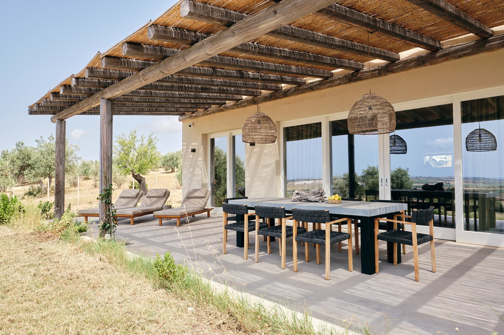
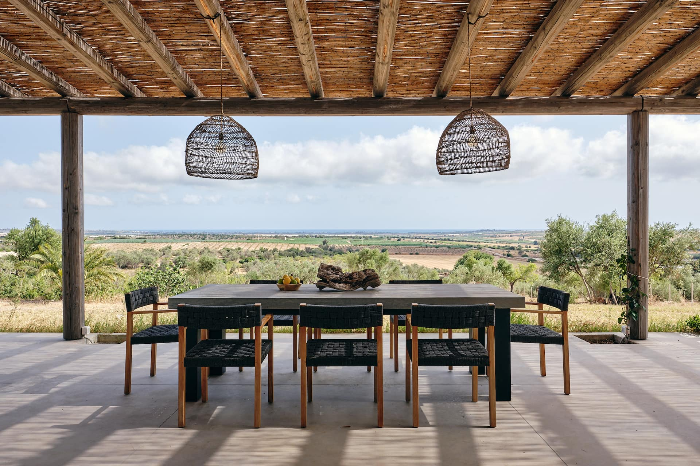
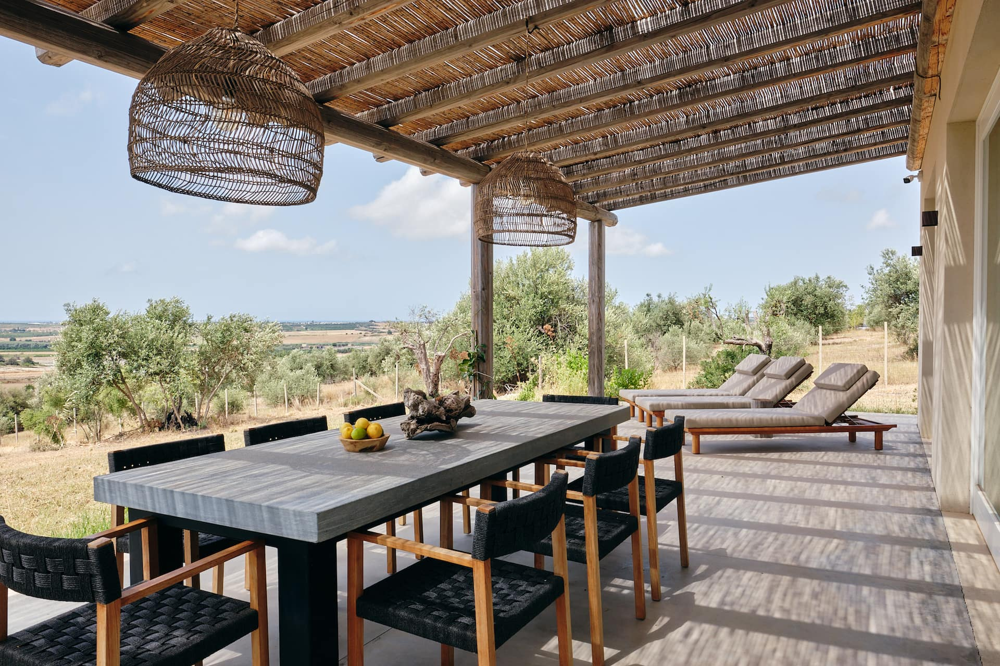
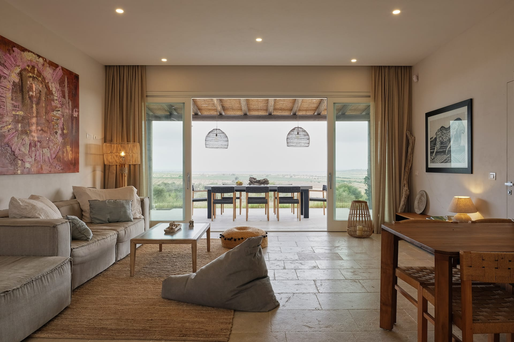
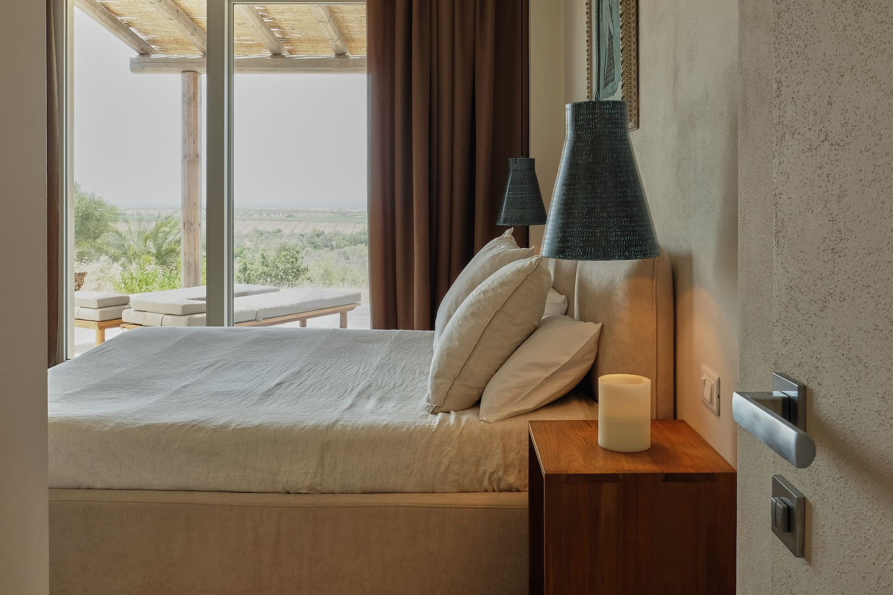
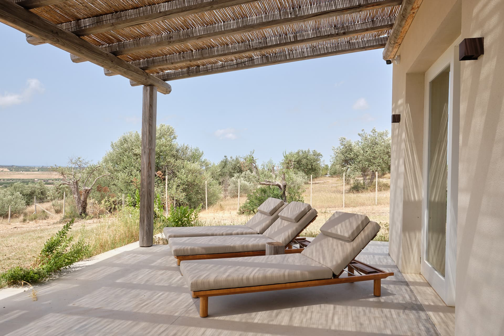
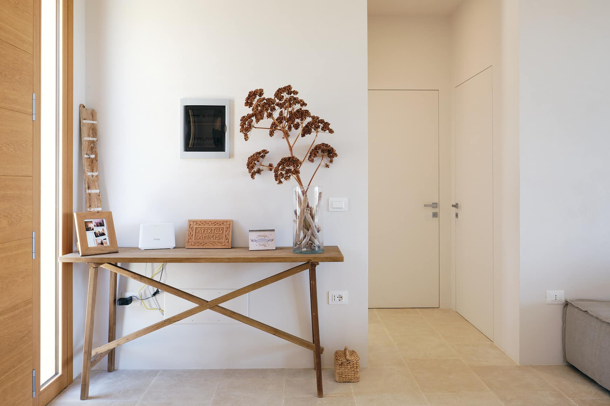
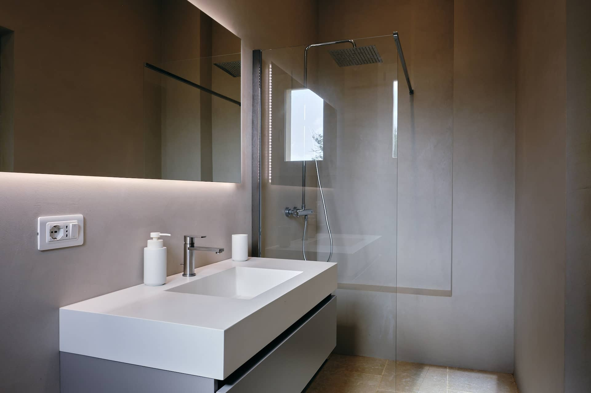
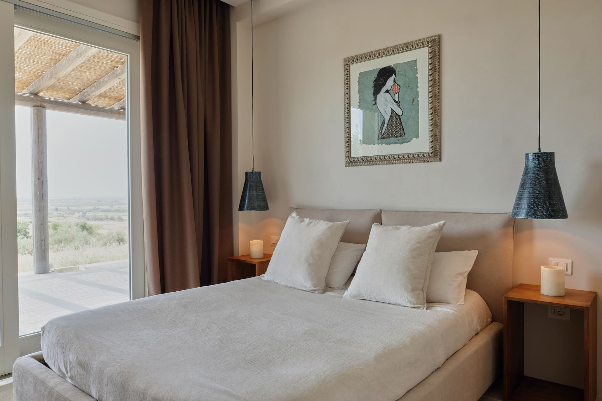
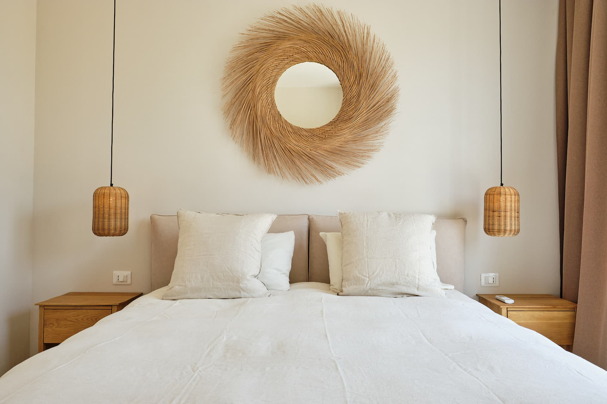
Expériences des Hôtes
Notre séjour était vraiment inoubliable. Le design intérieur était impeccable — chaque détail soigneusement pensé. Des vistas panoramiques qui rendaient chaque lever et coucher de soleil magiques.
Nous avons adoré notre séjour et nous nous sommes sentis immédiatement chez nous. Les vues sont absolument stupéfiantes. La maison est magnifiquement décorée et les alentours si paisibles.
Le charme de cette propriété réside dans sa tranquillité et sa confidentialité. Un endroit inattendu, élégant et raffiné, immergé dans la nature sicilienne typique. Une expérience rare et agréable.
De loin le meilleur endroit où nous ayons jamais séjourné sur Airbnb. L'environnement et la vue sont époustouflants — 100% nature pure. On se réveille avec les oiseaux et on s'endort avec les grillons.
Super paisible avec une VUE MAGNIFIQUE sur la mer. Moderne, fonctionnel et très confortable à tous égards. L'hôte était très réactif.
Emplacement parfait, paix et tranquillité. Lits très confortables et belle terrasse. Salvatore était un hôte parfait — attentionné et très serviable.
Localisation
Strada Provinciale Bimmisca-Agliastro · 96017 Noto (SR) · Sicile
Magnifiquement isolée — une voiture est indispensable, et c'est une partie de l'expérience. Tout ce qui compte est à portée de main.
Réservations
Réservez directement avec nous et économisez jusqu'à 10%. Pas de frais de plateforme, pas d'intermédiaires — un service personnalisé du premier contact à votre arrivée.
Recommandé
Écrivez-nous sur WhatsApp pour les disponibilités et les tarifs. Service rapide et personnel — comme l'hospitalité devrait fonctionner.
WhatsAppAussi Disponible
Via AirbnbVous préférez une plateforme familière ? Villa Magnus est sur Airbnb avec 17 avis vérifiés.
Voir sur AirbnbCheck-in à partir de 14h · Check-out avant 10h · +34 637 472 828